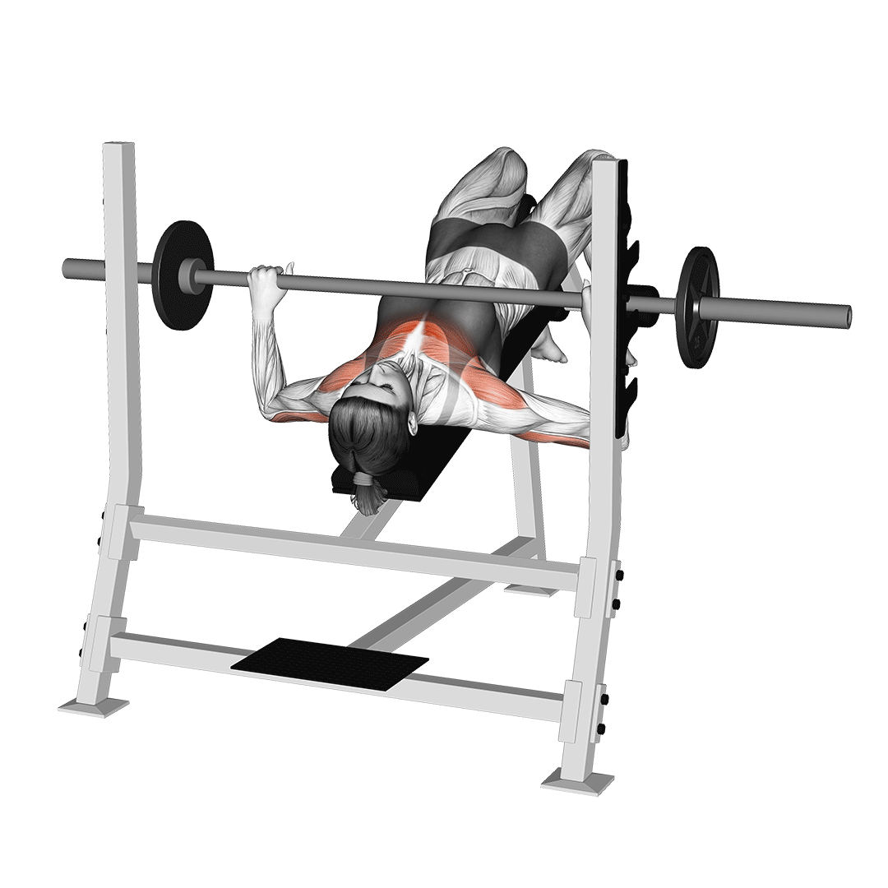
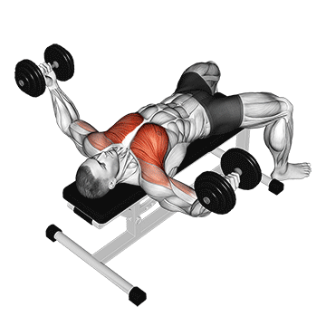
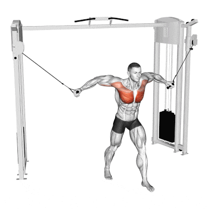

Bench Press
Targets the middle chest, helps build width and size.
4 sets
12, 10, 8, 6 reps
Progressive overload

Incline Bench Press
Focuses on the upper chest, giving it a rounder shape.
4 sets
12, 10, 8, 6 reps
Upper chest emphasis

Decline Bench Press
Emphasizes the lower chest and adds thickness.
3–4 sets
10–12 reps
Lower chest focus

Push-ups
A bodyweight staple for chest, shoulders, and triceps.
3–4 sets
12–20 reps
Maintain strict form

Dumbbell Flyes
Stretches and isolates the chest for better activation.
3–4 sets
12–15 reps
Slow, controlled motion

Cable Crossover
Constant tension on the chest for shaping and definition.
3–4 sets
12–15 reps
Adjust angle for upper, middle, or lower chest

Chest Dips
Great for lower chest development and adding mass.
3–4 sets
8–12 reps
Lean forward to emphasize chest